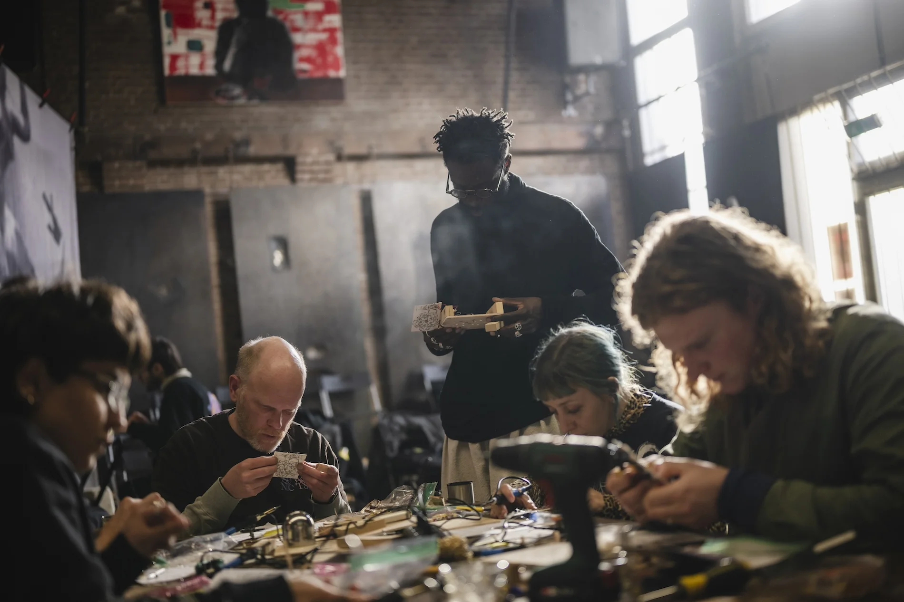
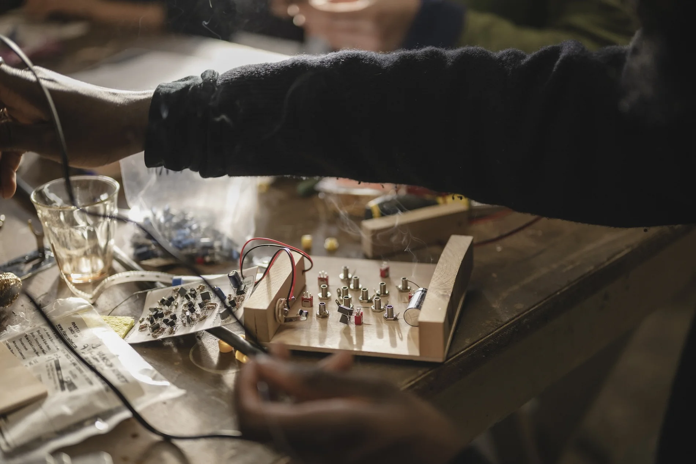
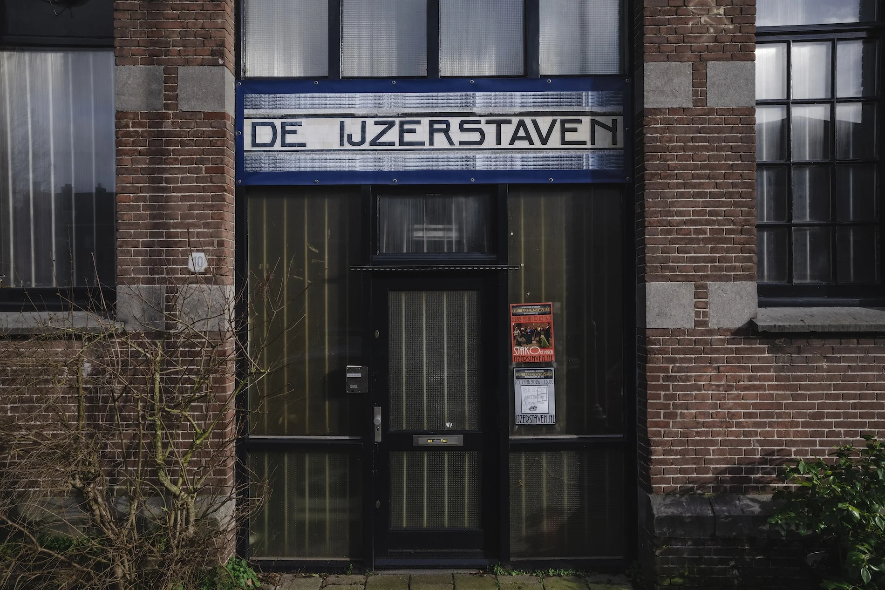

2 Day Workshop
Monday 16 & Tuesday 17 February 2026
Salon De IJzerstaven, Amsterdam, NL
Participation fee: €55 (€40 for students), and includes all working materials and kits for each participant. The fee will be charged after participants are selected.


During this two-day workshop, New York–based architect and sound artist Femi Shonuga-Fleming (also known as Sadnoise) opens the door to the strange and beautiful world of Ciat-Lonbarde – the cult analogue synthesisers designed by Peter Blasser. Built for hands-on play rather than polished perfection, these instruments have inspired a global community of DIY builders through open-source circuit designs, often constructed from paper: cut, folded, and assembled into fully functioning sound machines.
Mirroring natural processes, Ciat-Lonbarde synthesisers operate like living ecosystems. Powered by batteries or DC and encased in wood, they invite touch and experimentation, producing rich, organic sounds that wobble, pulse, and misbehave.
This workshop focuses on paper circuitry as both a material and political gesture: a low-cost, low-waste, and more environmentally friendly alternative to industrial production, and a way of reclaiming electronics as a personal, situated practice. Working by hand, participants are invited to think about sound-making through care, reuse, and material sensitivity.
Together with Shonuga-Fleming, participants will build a ‘Lil Sidrassi’ paper circuit instrument from scratch. Along the way, he will introduce the basics of paper circuit construction and share practical tips on creating simple enclosures to house your newly born sound machine. Expect soldering, crafting, listening, and the quiet thrill of watching something handmade begin to sing.
Participation
Kits will be provided during the workshop. This session is aimed at participants who are comfortable with soldering and have beginner to intermediate skills. Experience with DIY electronics and instrument building is encouraged.
The workshop costs €55, with a discounted rate of €40 for students, and includes all materials and kits. The fee will be charged after participants are selected.
If the participation fee poses a financial barrier, this can be indicated in the relevant section of the application form. A limited number of supported places may be available.
Please note that travel is not included and must be arranged by participants individually.
Accessibility
The workshop will take place in Amsterdam and is open only to participants based in the Netherlands. Sessions will be conducted in English. Please note that sign language interpretation will not be available.
